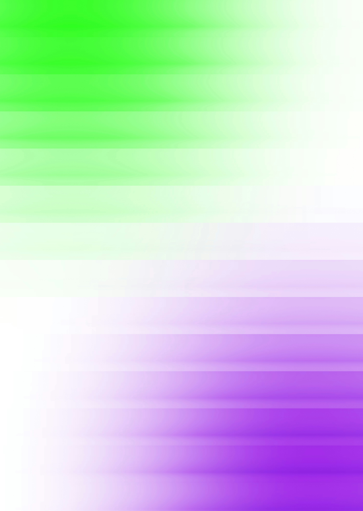

We
make
your
brand
visible
to
AI
—
not
just
search.
When someone asks ChatGPT, Perplexity, or Gemini a question in your category, your brand should be the one they cite. We build the infrastructure that makes that happen.

Three things. Done properly.
Most agencies bolt GEO onto an existing SEO retainer. We treat it as its own discipline — because it is.
- AI citation baseline report
- Schema and structured data audit
- Competitor citation benchmarking
- Content gap analysis
- JSON-LD schema implementation
- llms.txt crawler protocol setup
- Answer Capsule content architecture
- Entity authority across trusted domains
- Monthly AI citation tracking
- Generative Share of Voice reporting
- Competitive intelligence dashboard
- Continuous content optimisation
Your brand is invisible to the AI systems buyers consult first. Pages built for humans get discarded by retrieval models. Without entity records or schema, you're classified as unverified. Every category query resolves to a competitor's name by default — and you have no measurable Share of Voice.
- Unverified by AI. No structured data → classified as untrustworthy and excluded from answers.
- Content discarded. Prose-heavy pages without structure are skipped by retrieval models.
- Competitors win by default. Every category query resolves to their name, not yours.
- Zero measurable AI presence. Absent from the conversations driving purchasing decisions.
Your brand is machine-verified through structured data and entity records, so AI includes you in answers. Content is restructured into Answer Capsules retrieval systems extract cleanly. When buyers ask ChatGPT, Claude, or Perplexity about your category, your name appears — typically a 3× lift in cited mentions within the first quarter.
- Machine-verified brand. Structured data and entity records confirm your identity in answers.
- Content extracts cleanly. Answer Capsules carry complete, citable claims with full context.
- You're cited — not your competitors. When buyers ask AI about your category, your name appears.
- Tracked Share of Voice. Measurable, growing citations across every major AI platform.
What to expect when you work with us.
No lengthy onboarding. No waiting months for a plan. We move fast and show our work from week one.
- Full GEO diagnostic across 5 AI platforms
- Competitor citation benchmarking
- Schema and entity audit
- Prioritised gap report delivered
- JSON-LD schema implementation
- llms.txt crawler protocol deployed
- Answer Capsule content restructured
- Entity records verified across trusted domains
- Monthly Generative Share of Voice report
- Competitive citation tracking
- Content iteration based on AI response patterns
- Quarterly strategy review
Questions we get asked a lot.
Straight answers, no jargon.
Find out where your brand stands today.
Run a free GEO diagnostic in under 60 seconds. You'll get a scored breakdown of your AI citation readiness — no sign-up required.